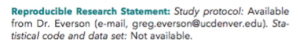
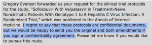

At COMPare we have been checking for outcome switching in five major journals, and then writing correction letters wherever trials have been misreported, to see whether journals respond appropriately. Along the way we have identified and documented many serious failings.
Today we describe a new issue COMPare has identified. While editors at Annals of Internal Medicine maintain a public commitment to the modern era of trials transparency and reporting integrity, we have already established that in reality the journal preferentially uses unpublished protocols, which are often inaccessible to other readers, behind closed doors, to assess reporting accuracy on issues such as outcome switching. This is a surprising and concerning choice by Annals editors: to use inaccessible documents is itself concerning. Moreover, trial registers were specifically set up over a decade ago to address this need, and to address selective outcome reporting, with legislation from national governments alongside near universal support and endorsement from the medical and academic community, regulators, academic journals, and organisations such as the International Committee of Medical Journal Editors and the World Health Organisation. To undermine and abandon this resource, as Annals editors seem to have done, seems a remarkable choice, and one that warrants extensive public discussion and debate.
More concerningly, we have found that Annals has published a false claim about the accessibility of the one trial protocol that we have so far requested, and have so far failed to correct the record when this false claim has been pointed out.
For background: COMPare assessed a trial in Annals by Everson et al and found evidence of misreporting of its prespecified outcomes. We immediately submitted a letter pointing out these discrepancies. Since then, Annals editors have argued that protocols are a more appropriate source of prespecified outcomes than registry entries. We therefore took their comments at face value and sought to assess whether the outcomes prespecified in this trial’s protocol were correctly reported. To do this we set out to obtain a copy of the protocol for the Everson trial, since the Annals paper states: “Study protocol: Available from Dr. Everson (e-mail, greg.everson@ucdenver.edu)”

We have now established that this is untrue: as you can see below, after emailing Dr Everson we received an email from Gilead, the pharmaceutical company that sponsored the trial and manufactures the drug being tested. In this email we were told that we could only see the protocol if we signed a confidentiality agreement. This is unacceptable: if we signed such a contract, we would be unable to discuss any discrepancies we found.

We therefore submitted a further comment to Annals, as below. This has now appeared, after a six day delay. Annals have so far not issued a correction. We believe such a correction is warranted, along with an urgent internal review by Annals to ensure there are no further misleading claims about the availability of protocols and other materials promised in their publications’ “reproducible research statements”. We also hope that they will disclose and review the measures they currently take to ensure such false claims are not made in Annals about the accessibility of data and documents. Moreover we hope that Annals editors will reconsider their preference for assessing outcome switching on the basis of protocols that readers and researchers are not able to access, review, and discuss, rather than the global network of trial registries which were specifically set up as a publicly accessible archive of this information.
Here is the full text of our letter and comment to Annals, 29th March 2016.
We are writing to raise serious concerns about lack of transparency and rigour in Annals’ processes to identify outcome switching in clinical trials, and Annals’ apparent complicity in avoidable secrecy around trial documents. We have provided extensive documentation of outcome switching in Annals [1]. Disappointingly, Annals’ editors have avoided open discussion [2]. They have also explained that Annals checks protocols itself in secret, undermining decades of progress towards better standards in trial reporting and transparency through registers [3].
When we initially assessed the Everson trial, we used the pre-specified outcomes posted by the trialists to the trial registry, the only publicly accessible date-stamped source for this information. Annals’ editors have attempted to argue [4] that protocols are a better source of information, despite registries being specifically set up as a publicly accessible source of prespecified outcomes, with extensive endorsement from ICMJE and journals.
The protocol for the above trial is not publicly posted. The trial report in Annals states: “Reproducible Research Statement: Study protocol: Available from Dr. Everson (e-mail,greg.everson@ucdenver.edu).” We therefore emailed Dr Everson to request the protocol. Our request was forwarded to a representative from Gilead Sciences, the trial’s commercial sponsor, who replied: “I regret to say that these protocols are confidential documents, but we would be happy to send you the original and both amendments if you sign a confidentiality agreement.”
If we signed this document, and found discrepancies or problems in the protocol, we would not be allowed to share this information with the doctors or patients it affects. This is plainly unacceptable. Protocols are routinely published, and should be, especially when Annals’ editors are now arguing that they regard protocols as a better source of information than the trial registers explicitly set up as publicly accessible sources of the same information.
Although the protocol was withheld, we were sent a very brief excerpt from the “original” protocol [5], which we were told contained a description of the outcomes. There was no date on this small clipping, no way to verify its provenance, and no context. In addition, the outcomes it contains are not adequately specified, often containing neither a time-point nor a specific method of measurement. Most concerningly, the outcomes given in this document are different to those on the original trial registry entry. It is unclear what could account for this discrepancy.
We hope Annals editors will state clearly whether they regard this secrecy as ethically acceptable, and review Annals’ preference for using secret inaccessible documents instead of publicly accessible registers. We also strongly urge the editors to reconsider their approach of permitting outcome switching in Annals which contravenes CONSORT, their own commitment to high standards, and widely accepted best practice.
Yours,
Ben Goldacre and Henry Drysdale, on behalf of the COMPare trials team.
[1] COMPare project results: www.COMPare-trials.org/results, last accessed 29/03/2016.
[2] Goldacre, Ben. “Make Journals Report Clinical Trials Properly.” Nature 530, no. 7588 (February 4, 2016): 7. doi:10.1038/530007a
https://www.nature.com/news/make-journals-report-clinical-trials-properly-1.19280
[3] Annals Editor in Chief comment: https://annals.org/article.aspx?articleid=2478526, last accessed 29/03/2016
Archived at: https://docs.google.com/document/d/1yBu_BPx_mvhPPYuM_IqLU9MctSB7EYrQALyUMeiSY54/edit?usp=sharing
[4] COMPare blog, January 20 2016: https://www.compare-trials.org/blog/where-does-annals-of-internal-medicine-stand-on-outcome-switching-a-detailed-response/
[5] Gilead to COMPare correspondence, March 18, 2016. https://docs.google.com/document/d/1WiXzEWs4Dm1u7Q4fFuZtpedWp7HETKuvMJGnnyOKOAM/edit?usp=sharing
There is one final note of interest. The brief document that Gilead sent over does contain some prespecified outcomes. These are apparently the ones that Annals editors used, for their internal review checking for outcome switching behind closed doors. However, even these prespecified outcomes are not completely reported in the Annals paper: SVR4 is not reported at all, and “virologic failure” is not sufficiently well defined for its reporting to be assessed.
This is noteworthy because Annals’ editors’ have justified their preference for using secret protocols to judge outcome switching, instead of public information on public registries, on the grounds that registry information is less informative. This is clearly not the case here: the outcomes in the protocol are no more detailed than that on the registry, with no difference in word length, and there is no scientific justification for undisclosed inconsistencies between the original protocol and the accompanying trial registry entry.
Leave a Reply Cancel reply